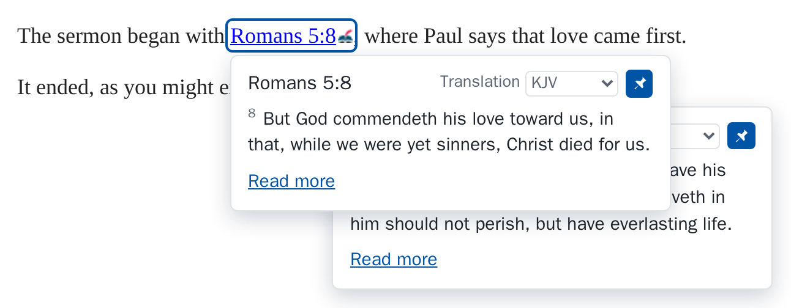

The tooltip normally closes when you move away. Pin it and it stays, so you can read the passage while you write a reply or follow the rest of the page.
Click the pin (its name is Keep open), to the right of the translation menu. While the tooltip is pinned:
You can pin as many tooltips as you like. While some are pinned, pointing at another reference opens one more tooltip, under or over its own link as usual, and that one comes and goes as usual until you pin it too. Only one tooltip is ever open that isn't pinned. A reference whose tooltip is already pinned doesn't open a second copy. Tooltips can overlap when their references are close together: the newest is on top, and closing or unpinning it shows the other.

Click the pin again, or press Esc while you're in the tooltip or on its link; that closes just that one. A tooltip always opens unpinned.